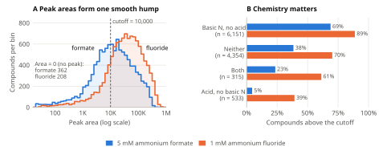

Goal: I’d like to use a compound’s structure to predict how likely we are to detect it in positive-ion mode on the Echo-MS, as a calibrated probability, with uncertainty that grows for unusual molecules. In chemistry terms this is a QSAR/QSPR model, built the Bayesian way.
A mass spectrometer weighs molecules, but only charged ones. So the sample is sprayed into a fine mist, where some molecules pick up an extra proton (H+; “positive-ion mode”). The instrument then reports a peak area at mass M + 1.007. A compound that gives a clear peak is said to “fly”. Molecules with a basic nitrogen (e.g. amines) grab a proton easily and usually fly. Molecules with an acidic group (e.g. carboxylic acids) usually don’t. These are tendencies, not rules.
The Echo-MS is a high-throughput mass spectrometer. A sound pulse shoots a nanoliter droplet straight from a 1536-well plate into the instrument, in under 2 seconds per sample [1]. OpenADMET and Octant use it to measure how liver enzymes break down drug-like compounds. A compound that doesn’t fly can’t be measured, so they pre-screen whole libraries. A model that predicts flying from structure could replace part of that screen and say how much to trust each call.
Where this project comes from. I’m in Josh Swamidass’s lab, where we work with OpenADMET’s Echo-MS data and the lab’s XenoSite tools for predicting drug metabolism. My work so far has been on the mass-spec side.
A recurring problem: most predicted metabolites are never seen. For reactions that split a parent into two products, we detect neither product in 93% of cases and both in only 0.1%. Some of these products are probably never formed. But many may simply not ionize, and right now a missing peak can’t tell us which. A model of which molecules “fly” would help separate “not formed” from “formed but invisible”. The Will It Fly data, measured on the same kind of instrument, is the natural training set.
I found the “Will It Fly” data in a public Zenodo dataset released by OpenADMET and Octant (record 21450795, 2026) [2]. The raw file is will_it_fly_in_mass_spec.tsv. It has 11,353 compounds, each with a structure (a SMILES string) and two peak areas: one with ammonium formate and one with ammonium fluoride added to the carrier solvent. Key facts from my first look:

| QSAR step | What I’ll do | Bayesian part |
|---|---|---|
| 1. Data and curation | Check structures; define “detected” (cutoff; zeros) | Zeros handled as censored data |
| 2. Descriptors | The lab’s existing descriptor code (xenosite-predict, phase1_mol.py) [3]; Morgan fingerprints | — |
| 3. Feature selection | Drop constant and correlated features | ARD priors instead of stepwise selection |
| 4. Splitting | 20% external test set; random and cluster-based splits | — |
| 5. Model building | Three Bayesian models (below) | Laplace, MCMC, Gaussian processes |
| 6. Validation | CV, external test set, Y-randomization | Log loss, calibration, posterior predictive checks |
| 7. Applicability domain | Where can the model be trusted? | Predictive uncertainty as a built-in domain |
| 8. Interpretation | Which features matter | Credible intervals on each effect |
Model 1: Bayesian logistic regression on the label (area > 10,000), with a Gaussian or ARD prior. The posterior comes from the Laplace approximation, checked against MCMC. It is simple and interpretable: each coefficient comes with a credible interval.
Model 2: censored regression on log peak area. Model and treat zeros as “below the detection limit” (a Tobit likelihood). This uses the full signal instead of a yes/no cut. The detection probability for any cutoff T then comes from the posterior predictive:
It combines model uncertainty () and measurement noise (, allowed to grow near the detection floor). If the lab changes its cutoff, nothing needs retraining. For the noise prior, I’ll use the reactivity experiment from the same data release [2]. There, each compound’s no-enzyme control was measured in 4 replicate wells on the same Echo-MS, so the spread between those replicates is pure measurement noise. Those are different compounds from the Will It Fly set, so the prior doesn’t reuse the training data.
Model 3: Gaussian process with a Tanimoto (substructure-similarity) kernel on fingerprints [4], with Laplace/EP inference and kernels chosen by marginal likelihood [5]. Its uncertainty grows for molecules unlike the training set, which gives a natural applicability domain. There are existing tools I can build on: the EPA model, which predicts how easily a compound is detected in positive or negative mode, and MS2Quant and IE_prediction, which predict positive-mode ionization efficiency. I’ll use their prediction as the GP’s prior mean, so the model only learns what is specific to the Echo-MS. They also serve as baselines.
Evaluation: log loss, Brier score and calibration plots (are the probabilities honest?), plus AUC and MCC against a random forest baseline. I’ll also check whether high uncertainty actually flags wrong predictions. Stretch goal: use the uncertainty to choose which compounds to measure (active learning).
Is this too much work for one course project? If so, which of the three models would you recommend I focus on?